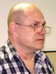

| Проблемы |
Церковь и наука говорят об одном и том же,
но на разных языках. Галей. |
|  | Уважаемые друзья. Цель моего сегодняшнего выступления - поделиться некоторыми наблюдениями, сделанными мной за период работы хирургом в областной детской больнице и институте пульмонологии. Как врач, я всегда пытался осмыслить происшедшие события с точки зрения принятых в определенный период понятий в медицине, но жизнь нередко не давала ответов и оставались вопросы. |
| Многие люди, особенно представители старшего поколения, вероятно в результате накопленного жизненного опыта, хорошо разбираются (или они так только думают) в 3-х вещах: 1. погоде, 2. политике и 3, медицине. По крайней мере - там у нас на родине. Не менее интересно, что почти все имеют свои рецепты по решению этих проблем. Не берусь судить о политике и погоде, но что касается самолечения - оно, как правило, большого вреда не приносит, на том и спасибо. |
Болезнь - это жизнь в стесненных условиях.
1. Медицинские проблемы. Вся история развития медицинской науки есть череда противоречий, принятия одних концепций, пересмотр их в пользу противоположных. Я хочу привести один, возможно, известный присутствующим пример. Язва желудка и гастрит. Скольким людям эта болезнь испортила жизнь - не покушать нормально, не поработать и не отдохнуть хорошо, особенно когда боли обостряются в 4-5 часов утра (так называемый час язвенника). В общем, по меткому выражению врачей 19 века - "больной желудок - отец печали". И лечили эту хворь по разному - таблетками, диетой, гипнозом, различными операциями от резекций желудка до различных модификаций ваготомии. И не важно, что состояние пациентом после какого-то времени вновь возвращалось к исходному до лечения уровню, а порой появлялись и новые, более серьезные проблемы, такие как болезнь оперированного желудка. Интересно знать, что лечение - это процесс, а вот излечение - это полное избавление от болезни (неважно, в результате лечения или вопреки ему). Но вот, около 26-27 лет назад открыли микроб, который является причиной этой болезни, и сейчас она успешно лечится антибактериальными препаратами. С каждым годом появляются все новые сообщения о роли микроорганизмов в развитии таких заболеваний, о которых мы раньше и не могли предположить их микробную или вирусную первопричину или их серьезную вспомогательную роль - некоторые формы рака, саркомы, мочекаменная болезнь (нанобактерии), атеросклероз и др.- это так называемые вялотекущиу инфекции. Важнейшую роль на состояние здоровья организма оказывает вода (человек - это полужидкая субстанция - до 70% массы тела взрослого составляет вода), качественное питание - некоторые исследователи на этот счет относят 80% здоровья людей. И очень мало, отрывочно, известно о полевых воздействиях на организм человека и других живых существ. Фиксируются факты некоторых неясных воздействий (гипотетические лептоны). 2. Духовная сфера.
А сейчас я попытаюсь перейти к малопонятной мне духовной сфере, к духовному воздействию на наше здоровье. (Правомерно ли пытаться понять постому человеку Божий замысел?) Что такое молитва? Если она привносит позитивный посыл (т.е. энергию) куда-либо, то интересно было бы знать характер этой энергии. Для меня одно ясно, что не важен способ передачи этого посыла - а именно, язык, т.к. язык - это только способ кодировки передаваемой мысли. Поэтому молитва, произнесенная на одном языке, помогает страждущему, не понимающему этого языка. Интересны структурно-пространственные изменения, происходящие с водой при произнесении молитвы (фильм), а ведь живой организм в значительной степени состоит из воды и многие биохимические процессы идут с участием воды. Опыт. 1. 700 пациентов, страдающих различными сердечными болезнями. После нескольких дней молитвы - у 500 темпы выздоровления увеличились на 93%. 2. Молитва убивает вредоносных микробов не только в организме человека, но и в воде. Молитва "Отче наш" - количество патогенных мироорганизмов уменьшила в воде в 100 раз. Ничего не сказано о непатогенных микробах, что с ними произошло. 3. По статистике (Г.Погодин): верующие - среди больных раком в неоперабельной стадии - живут на 5 лет дольше атеистов. 3. Следующая серия вопросов.
1). Если Бог дает людям болезни за грехи их, дает страдания, чтобы они осознали и покаялись в своих неправомерных поступках, то какова оценка деятельности врачей, которые этих людей исцеляют? Не идут ли они против воли Всевышнего? 2). Почему люди, ведущие достойную жизнь, умирают в молодом возрасте от тяжеленных недугов (я не говорю уже о детях), а откровенные негодяи благоденствуют и, нередко, остаются в истории знаковыми фигурами. Я понимаю, что это очень неприятный вопрос. 3). Как относиться к такой проблеме, как врачебная ошибка? Как мне когда-то сказал мой пациент, бывший православный священник, все врачи попадут в рай. Но какое провидение двигает умами и руками тех же врачей, когда совершается врачебная ошибка? (Врачебная ошибка - это добросовестное заблуждение врача, а отнюдь не намеренное - кое есть уголовно наказуемое деяние). А ведь она нередко приводит к смерти пациента - чьего-то ребенка, родителя, бабушки или дедушки. По данным ВОЗ, как причина смерти на 3 - 4 месте в мире стоит непреднамеренное побочное действие лекарственных средств. У 15 - 25% умерших на аутопсии не подтверждается диагноз болезни, по поводу которой больного "лечили". Но эта информация не афишируется. 4. Примеры А теперь некоторые интересные жизненные примеры, подмеченные мной в процессе хирургической практики. Многие люди боятся предстоящей операции. Это нормально, ибо у нас есть инстинкт самосохранения. С ними проводится психологическая подготовка, применяются медикаментозные средства. Но один случай запомнился мне особенно. Мальчик примерно 12 - 13 лет был доставлен в областную больницу из одной из райбольниц, где был прооперирован по поводу аппендицита, после чего развилось осложнение - ранняя кишечная непроходимость. После проведенной подготовки ребенку предстояло перенести еще одну операцию по устранению непроходимости кишечника. Было получено согласие родителей на операцию. Но если бы вы видели, как он упирался, кричал и не хотел операции. Я такого раньше не видел. Операция, к слову будет сказано, прошла гладко. Но через несколько часов у пациента развился синдром Мендельсона и мы его потеряли. Это пример предвидения, предчувствия близкой кончины. Другой случай предчувствия я наблюдал у женщины примерно 45 лет, которая была прооперирована на легких. Через неделю после операции она сообщила мне, что через несколько дней умрет. Я не находил никаких признаков надвигающейся трагической развязки - все анализы, ЭКГ, рентгенограмма были приличные, лечение переносила нормально, но пришел назначенный пациенткой день - и она выполнила свое обещание. На аутопсии - причин, которые побудили бы пациентку уйти из жизни найдено не было. Что это - предвидение или самоустановка на уход? Третий случай с позитивным исходом. Молодой человек около 30 лет, в прошлом очень успешный спортсмен - занимался бегом, выступал за СССР, в связи с этим не получил образования и, когда стал не нужен спорту , остался не у дел. Начал пить и однажды "на белой лошади" выпал с 5 этажа. Не погиб, но получил тяжелую травму позвоночника. Лечился довольно успешно по поводу перелома позвоночника, однако получил осложнение в виде гангренозного абсцесса правого легкого. Переведен в наш институт. Дренаж в абсцесс, микротрахеостома, мощная антибактериальная терапия, капельницы. Ничего не помогало, больной медленно и уверенно приближался к Рубикону. И тут это человек, который никогда не верил в бога, попросил привести к нему священника. Они уединились в палате на какое-то время. В итоге - больной начал быстро идти на поправку. Через какое-то время удалили ему верхнюю долю правого легкого и он окончательно выздоровел. Заключения данного сообщения мною не сделано, фактический материал носит разрозненнный и несистематизированный характер. Я только постарался подать отдельные факты для вашего осмысления. Благодарю за внимание. |
| Гал.6: 9 Делая добро, да не унываем, ибо в свое время пожнем, если не ослабеем. |
| Андрей Василевский 24 мая 2009 |